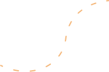
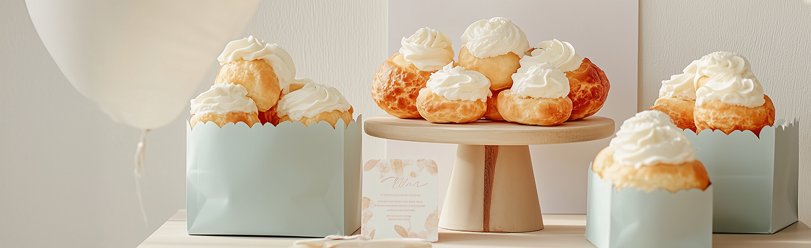
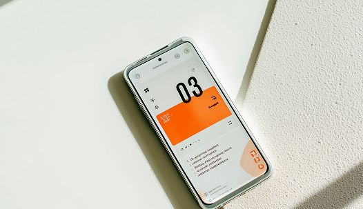

Brand Website
綠植生活品牌官網
以清爽留白與柔和影像呈現品牌調性，強化產品系列與門市導流。
從資訊架構、視覺設計到 RWD 網頁切版，我重視的不只是漂亮，而是讓使用者可以自然地找到答案、完成行動。
Service
建立首頁、活動頁、品牌官網的視覺方向，讓內容重點清楚、有一致的品牌感。

依照設計稿製作桌機、平板與手機版頁面，確保不同螢幕都能穩定閱讀。

協助梳理服務亮點、行動呼籲與頁面段落，讓網站不只好看，也真的能溝通。
Project
以清爽留白與柔和影像呈現品牌調性，強化產品系列與門市導流。

整理活動資訊層級，讓優惠、商品特色與購買動線更容易被理解。

重新規劃首頁節奏與行動入口，提升初次拜訪者的信任感。
Blog

越早整理目標、受眾與轉換動線，後面的設計決策就越穩。

從盒模型、圖片寬度到 grid 設定，逐步降低跑版機率。
Contact
歡迎把目前的需求、頁面目標或參考網站寄給我，我會協助你釐清下一步。